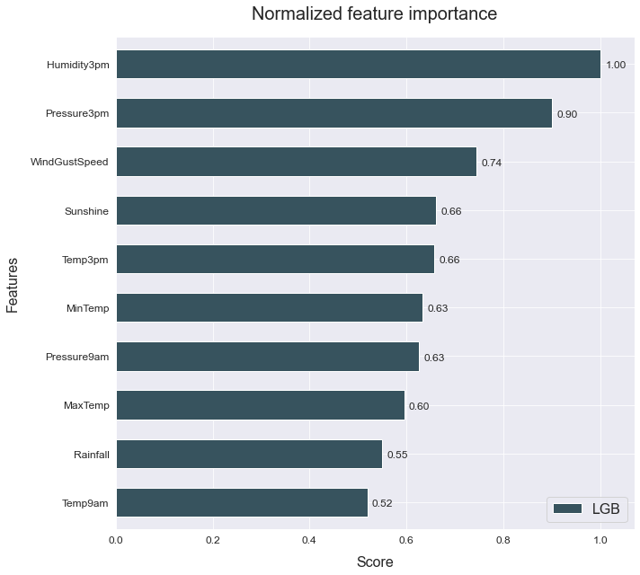
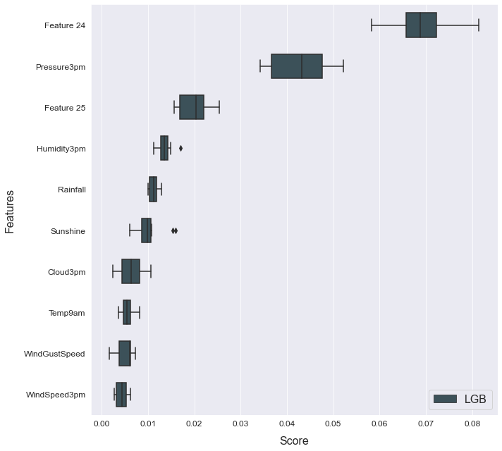

Feature engineering
This example shows how to use automated feature generation to improve your model's performance.
The data used is a variation on the Australian weather dataset from https://www.kaggle.com/jsphyg/weather-dataset-rattle-package. The goal of this dataset is to predict whether or not it will rain tomorrow training a binay classifier on target RainTomorrow.
Load the data
# Import packages
import pandas as pd
from atom import ATOMClassifier
# Load data
X = pd.read_csv('./datasets/weatherAUS.csv')
# Let's have a look at a subset of the data
X.sample(frac=1).iloc[:5, :8]
| Location | MinTemp | MaxTemp | Rainfall | Evaporation | Sunshine | WindGustDir | WindGustSpeed | |
|---|---|---|---|---|---|---|---|---|
| 36171 | WaggaWagga | 14.3 | 21.4 | 0.8 | 10.6 | 5.8 | W | 52.0 |
| 44425 | Canberra | 16.0 | 22.8 | 0.0 | 12.4 | 6.0 | E | 50.0 |
| 126238 | Walpole | 13.8 | 20.7 | 4.8 | NaN | NaN | NW | 33.0 |
| 54550 | Ballarat | 3.3 | 14.7 | 0.0 | NaN | NaN | N | 46.0 |
| 85638 | Cairns | 23.5 | 31.5 | 43.8 | 0.8 | 8.5 | SSE | 52.0 |
Run the pipeline
# Initiate ATOM and apply data cleaning
atom = ATOMClassifier(X, n_rows=1e4, test_size=0.2, verbose=0, random_state=1)
atom.impute(strat_num='knn', strat_cat='remove', min_frac_rows=0.8)
atom.encode(max_onehot=10, frac_to_other=0.04)
# Let's see how a LightGBM model performs without adding additional features
atom.run('LGB', metric='auc')
atom.scoring()
is_categorical is deprecated and will be removed in a future version. Use is_categorical_dtype instead
Results ===================== >>
LightGBM --> roc_auc: 0.878
# What are the most important fetaures?
atom.plot_feature_importance(show=10)

Now let's create some new fetaures using Deep Feature Synthesis
atom.verbose = 2 # Increase verbosity to see the output
# Create 100 new features using DFS
atom.feature_generation(strategy='dfs', n_features=100, operators=['add', 'sub', 'log', 'sqrt'])
Fitting FeatureGenerator...
Creating new features...
--> 100 new features were added to the dataset.
divide by zero encountered in log
invalid value encountered in log
# The warnings warn us that some operators created missing values!
# We can see the columns with missing values using the missing attribute
atom.missing
# We can easily turn off warnings in the future
atom.warnings = False
# We can use the impute method again
atom.impute(strat_num='knn', strat_cat='remove', min_frac_rows=0.8)
Fitting Imputer...
Imputing missing values...
--> Imputing 577 missing values using the KNN imputer in feature LOG(Cloud9am).
--> Dropping feature LOG(RainToday_other) for containing 8873 (99%) missing values.
--> Imputing 148 missing values using the KNN imputer in feature LOG(Sunshine).
--> Imputing 6 missing values using the KNN imputer in feature LOG(Temp9am).
--> Imputing 33 missing values using the KNN imputer in feature LOG(WindSpeed3pm).
# 100 new features may be to much...
# Let's check for multicollinearity and use RFECV to reduce the number even further
atom.feature_selection(strategy='RFECV', solver='lgb', n_features=30, scoring='auc', max_correlation=0.98)
Fitting FeatureSelector...
Performing feature selection ...
--> Feature Location was removed due to low variance. Value 0.2077375946173255 repeated in 100% of the rows.
--> Feature Cloud3pm + Humidity3pm was removed due to collinearity with another feature.
--> Feature Cloud3pm + RainToday_No was removed due to collinearity with another feature.
--> Feature Cloud3pm + WindDir9am was removed due to collinearity with another feature.
--> Feature Cloud3pm - Location was removed due to collinearity with another feature.
--> Feature Cloud3pm - RainToday_No was removed due to collinearity with another feature.
--> Feature Cloud9am + WindGustDir was removed due to collinearity with another feature.
--> Feature Evaporation + Location was removed due to collinearity with another feature.
--> Feature Evaporation + WindGustDir was removed due to collinearity with another feature.
--> Feature Evaporation - WindDir3pm was removed due to collinearity with another feature.
--> Feature Humidity3pm - RainToday_No was removed due to collinearity with another feature.
--> Feature Humidity3pm - Sunshine was removed due to collinearity with another feature.
--> Feature Humidity9am + RainToday_Yes was removed due to collinearity with another feature.
--> Feature Humidity9am - RainToday_No was removed due to collinearity with another feature.
--> Feature Humidity9am - Sunshine was removed due to collinearity with another feature.
--> Feature LOG(MaxTemp) was removed due to collinearity with another feature.
--> Feature Location + MinTemp was removed due to collinearity with another feature.
--> Feature Location + RainToday_No was removed due to collinearity with another feature.
--> Feature Location + WindDir3pm was removed due to collinearity with another feature.
--> Feature Location + WindGustDir was removed due to collinearity with another feature.
--> Feature Location + WindSpeed3pm was removed due to collinearity with another feature.
--> Feature Location - RainToday_Yes was removed due to collinearity with another feature.
--> Feature MaxTemp + RainToday_No was removed due to collinearity with another feature.
--> Feature MaxTemp + RainToday_Yes was removed due to collinearity with another feature.
--> Feature MinTemp + WindGustDir was removed due to collinearity with another feature.
--> Feature Pressure3pm + RainToday_other was removed due to collinearity with another feature.
--> Feature Pressure3pm + Temp3pm was removed due to collinearity with another feature.
--> Feature Pressure3pm - WindGustDir was removed due to collinearity with another feature.
--> Feature Pressure9am - WindGustDir was removed due to collinearity with another feature.
--> Feature RainToday_No + Temp9am was removed due to collinearity with another feature.
--> Feature RainToday_No + WindGustDir was removed due to collinearity with another feature.
--> Feature RainToday_No - WindDir9am was removed due to collinearity with another feature.
--> Feature RainToday_Yes + Temp9am was removed due to collinearity with another feature.
--> Feature RainToday_Yes + WindDir3pm was removed due to collinearity with another feature.
--> Feature RainToday_Yes + WindDir9am was removed due to collinearity with another feature.
--> Feature RainToday_Yes - WindDir9am was removed due to collinearity with another feature.
--> Feature RainToday_other - Temp9am was removed due to collinearity with another feature.
--> Feature RainToday_other - WindGustSpeed was removed due to collinearity with another feature.
--> Feature RainToday_other - WindSpeed9am was removed due to collinearity with another feature.
--> Feature Rainfall + RainToday_No was removed due to collinearity with another feature.
--> Feature Rainfall + WindDir9am was removed due to collinearity with another feature.
--> Feature Rainfall - WindDir3pm was removed due to collinearity with another feature.
--> Feature SQRT(Humidity3pm) was removed due to collinearity with another feature.
--> Feature SQRT(Pressure9am) was removed due to collinearity with another feature.
--> Feature Sunshine + WindDir9am was removed due to collinearity with another feature.
--> Feature Temp3pm + WindDir9am was removed due to collinearity with another feature.
--> Feature Temp3pm + WindGustDir was removed due to collinearity with another feature.
--> Feature Temp3pm - WindDir3pm was removed due to collinearity with another feature.
--> Feature Temp9am - WindDir9am was removed due to collinearity with another feature.
--> Feature WindDir3pm - WindSpeed3pm was removed due to collinearity with another feature.
--> Feature WindGustDir + WindGustSpeed was removed due to collinearity with another feature.
--> Feature WindGustDir - WindSpeed9am was removed due to collinearity with another feature.
--> The RFECV selected 64 features from the dataset.
>>> Dropping feature RainToday_Yes (rank 3).
>>> Dropping feature RainToday_No (rank 5).
>>> Dropping feature Location - WindSpeed9am (rank 2).
>>> Dropping feature SQRT(Cloud9am) (rank 7).
>>> Dropping feature SQRT(Rainfall) (rank 6).
>>> Dropping feature SQRT(WindSpeed9am) (rank 4).
# The collinear attribute shows what features were removed due to multicollinearity
atom.collinear
| drop_feature | correlated_feature | correlation_value | |
|---|---|---|---|
| 0 | Cloud3pm + Humidity3pm | Humidity3pm | 0.99578 |
| 1 | Cloud3pm + RainToday_No | Cloud3pm | 0.98122 |
| 2 | Cloud3pm + WindDir9am | Cloud3pm, Cloud3pm + RainToday_No | 0.99968, 0.98054 |
| 3 | Cloud3pm - Location | Cloud3pm, Cloud3pm + RainToday_No, Cloud3pm + ... | 1.0, 0.98122, 0.99968 |
| 4 | Cloud3pm - RainToday_No | Cloud3pm, Cloud3pm + WindDir9am, Cloud3pm - Lo... | 0.98405, 0.98408, 0.98405 |
| 5 | Cloud9am + WindGustDir | Cloud9am | 0.99979 |
| 6 | Evaporation + Location | Evaporation | 1.0 |
| 7 | Evaporation + WindGustDir | Evaporation, Evaporation + Location | 0.9999, 0.9999 |
| 8 | Evaporation - WindDir3pm | Evaporation, Evaporation + Location, Evaporati... | 0.9999, 0.9999, 0.99969 |
| 9 | Humidity3pm - RainToday_No | Humidity3pm, Cloud3pm + Humidity3pm | 0.99983, 0.99572 |
| 10 | Humidity3pm - Sunshine | Humidity3pm, Cloud3pm + Humidity3pm, Humidity3... | 0.99347, 0.99405, 0.9935 |
| 11 | Humidity9am + RainToday_Yes | Humidity9am | 0.9998 |
| 12 | Humidity9am - RainToday_No | Humidity9am, Humidity9am + RainToday_Yes | 0.9998, 0.99999 |
| 13 | Humidity9am - Sunshine | Humidity9am, Humidity9am + RainToday_Yes, Humi... | 0.99165, 0.99183, 0.99184 |
| 14 | LOG(MaxTemp) | MaxTemp | 0.98395 |
| 15 | Location + MinTemp | MinTemp | 1.0 |
| 16 | Location + RainToday_No | RainToday_Yes, RainToday_No | -0.98403, 1.0 |
| 17 | Location + WindDir3pm | WindDir3pm | 1.0 |
| 18 | Location + WindGustDir | WindGustDir | 1.0 |
| 19 | Location + WindSpeed3pm | WindSpeed3pm | 1.0 |
| 20 | Location - RainToday_Yes | RainToday_Yes, RainToday_No, Location + RainTo... | -1.0, 0.98403, 0.98403 |
| 21 | MaxTemp + RainToday_No | MaxTemp, LOG(MaxTemp) | 0.99841, 0.9831 |
| 22 | MaxTemp + RainToday_Yes | MaxTemp, LOG(MaxTemp), MaxTemp + RainToday_No | 0.99834, 0.98156, 0.99356 |
| 23 | MinTemp + WindGustDir | MinTemp, Location + MinTemp | 0.99997, 0.99997 |
| 24 | Pressure3pm + RainToday_other | Pressure3pm | 0.99995 |
| 25 | Pressure3pm + Temp3pm | MaxTemp + Pressure3pm | 0.98005 |
| 26 | Pressure3pm - WindGustDir | Pressure3pm, Pressure3pm + RainToday_other | 0.99998, 0.99992 |
| 27 | Pressure9am - WindGustDir | Pressure9am | 0.99998 |
| 28 | RainToday_No + Temp9am | Temp9am | 0.99797 |
| 29 | RainToday_No + WindGustDir | RainToday_No, Location + RainToday_No | 0.9933, 0.9933 |
| 30 | RainToday_No - WindDir9am | RainToday_No, Location + RainToday_No | 0.99169, 0.99169 |
| 31 | RainToday_Yes + Temp9am | Temp9am, RainToday_No + Temp9am, RainToday_No ... | 0.99795, 0.99191, -0.99993 |
| 32 | RainToday_Yes + WindDir3pm | RainToday_Yes, Location - RainToday_Yes | 0.99334, -0.99334 |
| 33 | RainToday_Yes + WindDir9am | RainToday_Yes, Location - RainToday_Yes, RainT... | 0.99154, -0.99154, -0.9847, 0.98993 |
| 34 | RainToday_Yes - WindDir9am | RainToday_Yes, Location - RainToday_Yes | 0.9911, -0.9911 |
| 35 | RainToday_other - Temp9am | Temp9am, RainToday_No + Temp9am, RainToday_No ... | -0.99993, -0.998, 0.99775, -0.99792 |
| 36 | RainToday_other - WindGustSpeed | WindGustSpeed, Cloud9am - WindGustSpeed | -0.99998, 0.98438 |
| 37 | RainToday_other - WindSpeed9am | WindSpeed9am, Location - WindSpeed9am | -0.99997, 0.99997 |
| 38 | Rainfall + RainToday_No | Rainfall | 0.99907 |
| 39 | Rainfall + WindDir9am | Rainfall, Rainfall + RainToday_No | 0.99998, 0.99902 |
| 40 | Rainfall - WindDir3pm | Rainfall, Rainfall + RainToday_No, Rainfall + ... | 0.99998, 0.99907, 0.99995 |
| 41 | SQRT(Humidity3pm) | Humidity3pm, Cloud3pm + Humidity3pm, Humidity3... | 0.98722, 0.98193, 0.98674 |
| 42 | SQRT(Pressure9am) | Pressure9am, Pressure9am - WindGustDir | 1.0, 0.99998 |
| 43 | Sunshine + WindDir9am | Sunshine, RainToday_other - Sunshine | 0.99982, -0.99948 |
| 44 | Temp3pm + WindDir9am | Temp3pm | 0.99997 |
| 45 | Temp3pm + WindGustDir | Temp3pm, Temp3pm + WindDir9am | 0.99998, 0.99997 |
| 46 | Temp3pm - WindDir3pm | Temp3pm, Temp3pm + WindDir9am, Temp3pm + WindG... | 0.99998, 0.99993, 0.99993 |
| 47 | Temp9am - WindDir9am | Temp9am, RainToday_No + Temp9am, RainToday_No ... | 0.99996, 0.99798, -0.99783, 0.99787, -0.9999 |
| 48 | WindDir3pm - WindSpeed3pm | WindSpeed3pm, Location + WindSpeed3pm, Locatio... | -0.99998, -0.99998, 0.99998 |
| 49 | WindGustDir + WindGustSpeed | WindGustSpeed, Cloud9am - WindGustSpeed, RainT... | 0.99999, -0.9843, -0.99998 |
| 50 | WindGustDir - WindSpeed9am | WindSpeed9am, Location - WindSpeed9am, RainTod... | -0.99999, 0.99999, 0.99995 |
# After applying RFECV, we can plot the score per number of features
atom.plot_rfecv()

# Let's see how the model performs now
atom.run('LGB')
Running pipeline ============================= >>
Models in pipeline: LGB
Metric: roc_auc
Results for LightGBM:
Fitting -----------------------------------------
Score on the train set --> roc_auc: 0.9962
Score on the test set --> roc_auc: 0.8787
Time elapsed: 0.708s
-------------------------------------------------
Total time: 0.722s
Final results ========================= >>
Duration: 0.723s
------------------------------------------
LightGBM --> roc_auc: 0.879
# Did the feature importance change?
atom.plot_feature_importance(show=10)

Lets try the same using Genetic Feature Generation
atom = ATOMClassifier(X, n_rows=1e4, test_size=0.2, verbose=0, warnings=False, random_state=1)
atom.impute(strat_num='knn', strat_cat='remove', min_frac_rows=0.8)
atom.encode(max_onehot=10, frac_to_other=0.04)
# Change verbosity to print extended info
atom.verbose = 2
# Create new features using Genetic Programming
atom.feature_generation(strategy='genetic', n_features=20, generations=10, population=2000)
Fitting FeatureGenerator...
| Population Average | Best Individual |
---- ------------------------- ------------------------------------------ ----------
Gen Length Fitness Length Fitness OOB Fitness Time Left
0 3.17 0.127531 3 0.50405 N/A 9.52s
1 3.10 0.338627 5 0.536586 N/A 9.04s
2 3.50 0.443734 9 0.541692 N/A 7.65s
3 4.44 0.47684 7 0.54494 N/A 6.89s
4 6.25 0.512037 13 0.546193 N/A 5.76s
5 7.47 0.507736 9 0.550266 N/A 4.62s
6 7.73 0.500405 11 0.55324 N/A 3.56s
7 7.99 0.497944 11 0.553398 N/A 2.38s
8 9.29 0.494223 13 0.554965 N/A 1.29s
9 10.68 0.493684 11 0.553398 N/A 0.00s
Creating new features...
--> 5 new features were added to the dataset.
# We can see the feature's fitness and description through the genetic_features attribute
atom.genetic_features
| name | description | fitness | |
|---|---|---|---|
| 0 | Feature 24 | mul(sub(sub(sub(Humidity3pm, Sunshine), Sunshi... | 0.542398 |
| 1 | Feature 25 | mul(sub(sub(Humidity3pm, Sunshine), Sunshine),... | 0.542240 |
| 2 | Feature 26 | mul(sub(Humidity3pm, Sunshine), mul(sub(sub(Hu... | 0.542240 |
| 3 | Feature 27 | mul(mul(sub(Humidity3pm, Sunshine), WindGustSp... | 0.542240 |
| 4 | Feature 28 | mul(mul(sub(sub(Humidity3pm, Sunshine), Sunshi... | 0.542240 |
# And fit the model again
atom.run('LGB', metric='auc')
Running pipeline ============================= >>
Models in pipeline: LGB
Metric: roc_auc
Results for LightGBM:
Fitting -----------------------------------------
Score on the train set --> roc_auc: 0.9901
Score on the test set --> roc_auc: 0.8793
Time elapsed: 0.305s
-------------------------------------------------
Total time: 0.313s
Final results ========================= >>
Duration: 0.314s
------------------------------------------
LightGBM --> roc_auc: 0.879
atom.plot_feature_importance(show=10)

# We can check the feature importance with other plots as well
atom.plot_permutation_importance(show=10)
atom.dependence_plot()
